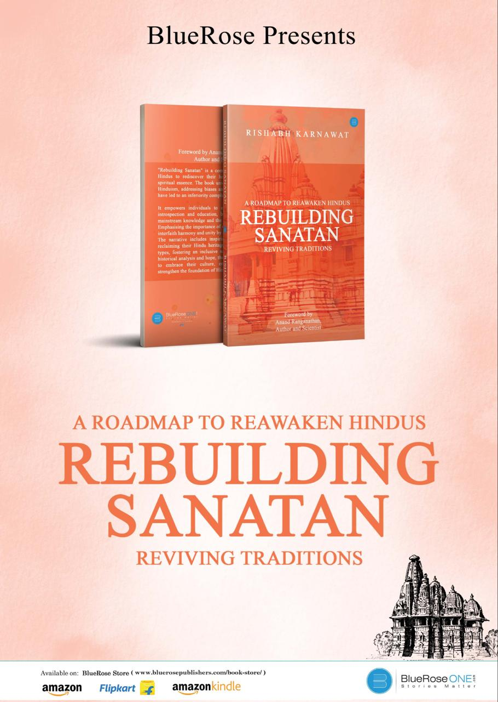

i am an author too.
intrigued by the ancient indian civilisation, i wrote a book on it. my book rebuilding sanatan explores the rich ancient history of india and suggests a road map to revive the forgotten civilisation.
you can order rebuilding sanatan on amazon or flipkart. i would love to hear your feedback.
here are some of the books i read recently. all of them were good, some of them were great and a few were outstanding. feel free to send me recommendations.
books that i have read on trips ✈️
- India's Most Fearless by Rahul Singh and Shiv Aroor
- Lust for Life by Irving Stone
- Einstein by Walter Isaacson
- Counselling with Choice Theory
- 4000 Weeks by Oliver Burkeman
- Frames of Mind by Howard Gardner
- Nexus by Yuval Noah Harari
-
- Godman to Tycoon by Priyanka Pathak Narain
- The Fabric of Reality by David Deutsch
- The Ruins of Kasch by Roberto Calasso
- The Unusual Billionaires by Saurabh Mukherjee
- The Accidental Billionaires by Ben Mezrich
-
- Warren Buffett Portfolio by Robert G. Hagstrom
- The Parasitic Mind by Gad Saad
- The Art of Thinking Clearly by Rolf Dobelli
- Things Hidden Since Foundation of World by Rene Girard
- The Almanack of Naval Ravikant by Eric Jorgenson
books that i have read before sleeping 💤
- The Fall of Roman Empire
- Home Deus by Yuval Noah Harari
- 21 Lessons for the 21st Century by Yuval Noah Harari
- Thrilled to Death
- A Brief History of Time by Stephen Hawking
- How Not to Die by Gene Stone
- Rich Dad Poor Dad by Robert Kiyosaki
- Mind is your Business by Sadhguru
- The Science of Religion by Paramahansa Yogananda
- The Gene: An Intimate History by Siddhartha Mukherjee
- Originals: How Non-conformists Move the World by Adam Grant
- Blitzscaling: by Reid Hoffman
- How to Own Your Own Mind by Napoleon Hill
- Individual and Society by Karl Marx and Friedrich Engels
- The Tao of Physics by Fritjof Capra
- Rest by Soojung-Kim Pang
- Zero to One by Peter Thiel
- The Story of My Experiments with Truth by Mahatma Gandhi
- Outlive: The Science and Art of Longevity by Dr. Peter Attia
- The God Delusion by Richard Dawkins
- The Industries of the Future by Alec Ross
- 100 World’s Greatest Short Stories by Various Authors
books that i could not finish
- The Brothers Karamazov by Fyodor Dostoevsky
- The Communist Manifesto by Karl Marx and Friedrich Engels
- Benjamin Franklin by Walter Issacson
- Generation divide by Bobby Ruffy
- Clark, Civilisation
- Laslett, The World We Have Lost
- Bernal, The Extension of Man
- Franklin, Autobiography
- Girouard, Life in the English Country House
- Pirenne, Mohammed and Charlemagne
- Runciman, The Fall of Constantinople
- Cipolla, Guns, Sails and Empires
- Hadas, A History of Rome
- Oman, The Art of War in the Middle Ages
- Vasari, Lives of the Artists
- Bovill, The Golden Trade of the Moors
- Caesar, Gallic Wars
- Kuhn, The Copernican Revolution
- Leneardo da Vinci by Walter issacson
- Invisible emperor
books that i read in lockdown
- It’s all in your head BY Russ
- Courage is calling by Ryan Holiday
- Cracking the Egyptian code by W. Andrew Robinson
- When the body says no by Gobor Mate
- Seduction by Robert Greene
- 50th law by Robert Greene
- War by Robert Greene
- Daily laws by Robert Greene
- Never finished by David goggins
- Raw hitman: Real story of Agent Lima
- The obstacle is the way by Ryan Holiday
- Steve Jobs by Walter Isaacson
- Mein Kampf by Adolf Hitler
- Think and Grow Rich by Napoleon Hill
- Atomic Habits by James Clear
- The Four Hour Work Week by Tim Ferris
- Digital Minimalism by Cal Newport
- Skin in the Game by Nassim Nicholas Taleb
- Ikigai by Francesc Miralles and Hector Garcia
- Factfulness by Hans Rosling
- Vedanta by Osho
- Man’s Search for Meaning by Dr. Viktor Frankl
- Meditations by Marcus Aurelius
- In Search of the Miraculous by Osho
- Inner Engineering by Sadhguru
- The Psychology of Money by Morgan Housel
- The Richest Man in Babylon by George Clason
- The Story of Philosophy by Will Durant
- The Autobiography of a Yogi by Paramahansa Yogananda
- The Innovators by Walter Isaacson
- AI Superpowers by Kai-fu Lee
- The Singularity is Near by Ray Kurzweil
- Life 3.0 by Max Tegmark
- Death: An Inside Story by Sadhguru
- India’s Most Fearless 2: by Rahul Singh and Shiv Aroor
- Karma by Sadhguru
- The Future is Faster than you think by Peter Diamandis
- The Fourth Industrial Revolution by Klaus Schwab
- Wings of Fire by APJ Abdul Kalam
- The Second Machine Age by Erik Brynjolfsson
- The Lean Startup by Eric Ries
- Mossad: The Greatest Missions of the Israeli Secret Service by Michael Bar-Zohar and Nissim Mishal
books that i received as recommendations
- Thinking, Fast and Slow by Daniel Kahneman
- Etiquette by Emily Post
- How to world works by Noam Chomsky
- Principles by Ray Dalio
- The wealth money can’t buy by Robin Sharma
- The Laws of Human Nature by Robert Greene
- Make, Think, Imagine: by John Browne
- Finding My Virginity by Richard Branson
- Elon Musk by Walter Isaacson
- Don’t Die by Bryan Johnson
- The Exponential Age by Azeem Azhar
- Bad Therapy, why kids aren’t growing up Abigil Shrier
- Courage to be disliked by Ichiro Kishimi
- Marcus Aurelius meditation.
- Aghora by Roberto Svoboda
- India that is Bharat by J. Sai Deepak
- India, Bharat and Pakistan by J. Sai Deepak
- Gautam Adani by RN Bhaskar.
- The mountain is you by Brianna Wiest
- Hard things about hard things by Ben Horowitz
- The godfather by Mario Puzo
- The basic laws of Human stupidity by Carlo M
- Shiva by Vikram Sampath
- Brave hearts of Bharat by Vikram Sampath
- Veer Savarkar by Vikram Sampath volume 1.
- Veer Savarkar by Vikram Sampath volume 2.
- Poor Charlie’s Almanac by Charlie Munger
- The beginning of infinity by David Deutsch
- Broken promises: by Mritunjay Sharma
- Harsh realities- harsh Mariwala
- The anxious generation by Jonathan Haidt
- 10 judgements that changed India by Zia Mody
- 21 irrefutable laws of leadership by John C. Maxwell
- A brief history of everyone who ever lived by Adam Rutherford
- Culture by Deppinder Goyal
- Mastery by Robert Greene
- Never split the difference by Christopher Voss